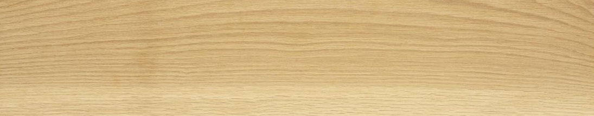
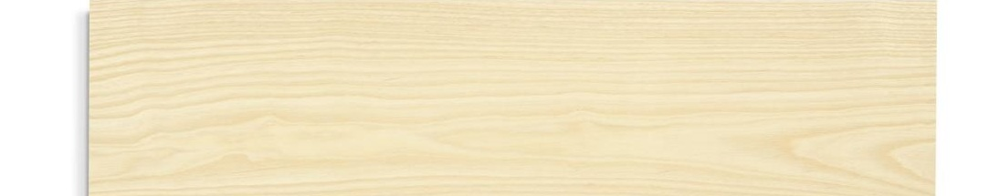
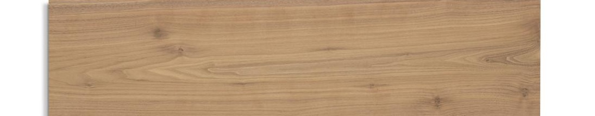
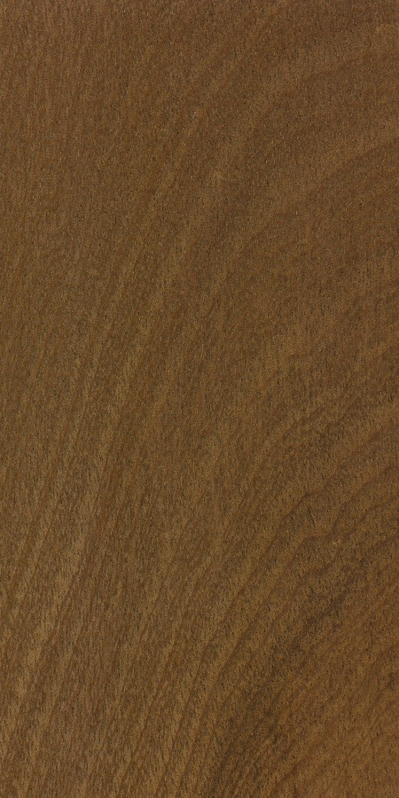
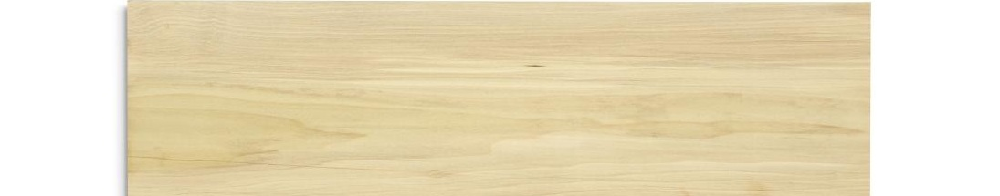

White oak
Visible grain and a pale-to-brown range. A strong starting point for sculpted surfaces and architectural continuity.
01 / Solid wood
Rooms with warmth. Surfaces with movement. A little surprise.
02 / Solid wood
Your work brings old materials and contemporary interiors into a clear relationship.
A sculpted island, a generous window seat or a timber wall that changes with the light.
Parametric surfaces / Toronto
Art for Everyday carves a flowing relief directly into solid hardwood.
A feature wall, bedhead or reception front with a pattern scaled to the room.
Set the depth, rhythm and lighting together. Resolve one full-depth sample before the run.
Jib House / Chester, Nova Scotia
Omar Gandhi’s solid-wood spiral stair uses five-axis machining.
A flowing handrail, sculpted stair component or curved cabinet end.
Choose where the curve begins and ends. Structure, grain and assembly guide the form.
Grotto Sauna / Georgian Bay, Ontario
PARTISANS and MCM coordinated CNC carving, grain and assembly across a continuous interior.
A window seat or banquette that rolls into a wall, niche or end return.
Test comfort at full scale. Develop a dry-interior version before any specialist wet-space commission.
Barr / Copenhagen
CNC-milled oak counters and sculpted surfaces sit within an older stone-and-timber room.
A bar front or island whose relief has a reason: water, terrain or the rhythm of the building.
Keep the pattern legible across corners. Let the lighting reveal it.
Kiam Cabinet / Jean-Marie Massaud for Zanat
Kiam is solid-wood cabinetry with hand-carved, layered fronts.
A storage wall that reads as one composed surface, with doors concealed in its rhythm.
Develop an original relief. Test the door edge, grip and movement before expanding the pattern.
New directions / curved cabinetry
Carry the curve across doors and drawers, with gaps that feel part of the design.
Explore shaped corners or a tambour return where the piece changes direction.
Develop fitted or freestanding cabinetry, starting with one full-size corner.
New directions / relief and dimension
Carry a relief pattern into an accent wall or cabinet front, scaled to the room.
Compare pattern depths under the intended lighting before choosing the final surface.
Resolve edges, cleaning and fixings in a sample; account for moisture in vanity work.
10 / Solid wood

Visible grain and a pale-to-brown range. A strong starting point for sculpted surfaces and architectural continuity.

Open grain with a pronounced line. Consider long profiles, screens and relief that lets the grain participate.

A darker, quieter richness. A good candidate for one focal cabinet, a shaped edge or a deep relief.

Warm reddish brown, often with ribbon figure. Consider a dramatic cabinet or a continuous interior accent.

An economical candidate for painted or coloured work. Stain and dye offer range, but even colour needs a tested finish system.
Reference grain swatches, not approved finishes. Poplar here means American yellow-poplar / tulipwood. Natural colour and absorption vary. Confirm stock and price. Sources [14-16].
Givaudan / Zurich
Curved solid-oak balustrade cladding uses dukta’s incision process to make timber flexible.
A flowing reception edge or room divider, shaped around circulation rather than added afterwards.
Choose the construction method early: kerfing, lamination and carved parts solve different problems.
Bar Raval / Toronto
PARTISANS’ mahogany interior shows how many machined components can read as one continuous form.
Use the x400 to explore changing tool angles, compound transitions and repeatable sculpted parts.
Prototype one difficult junction. Confirm tooling, holding and hand finishing to establish the full assembly.
Curveball 01 / Joseph Walsh
Magnus V is a six-metre-high olive-ash sculpture that reshapes an atrium.
One timber ribbon becomes the room’s focal point: a threshold, canopy or suspended gesture.
Start with a model and specialist structural input. This is an ambitious direction, not a standard CNC package.
Curveball 02 / Sebastian Errazuriz
The mahogany Wave Cabinet turns storage into a moving field of timber slats. A kinetic reference, with steel and glass.
An opening sequence becomes part of the architecture: a reveal, a ritual, a small performance.
Explore a modest moving screen or cabinet first. Mechanism, safe clearances and durability come before spectacle.
15 / Solid wood
Sculpted surfaces, shaped edges and cabinet fronts to develop in solid wood. Where five-axis adds value: changing angles and compound returns.
Deep valleys and changing surface angles.
Relief that carries through door returns.
Compound transitions across an assembly.
A relief field turning around a corner.
Shaped ends and changing edge profiles.
Curved corners with resolved inside faces.
16 / Solid wood
Built-in seating, flowing rails and timber forms that shape a room. Final geometry determines the machining approach.
Twisting rails and sculpted transitions.
Seat, back and return as one surface.
A rounded opening with a deep return.
A complex blend across several faces.
Explore shaped caps and terminal pieces.
A study in changing section and direction.
17 / Solid wood
Choose the surface or form worth developing. Bring a sketch, rough dimensions and the intended use.
Agree on a paid prototype, the material and finish, then review it together before the larger commission.
These are outside references, not workshop commissions or endorsements.
Photographs remain with their rights holders. Reproduction permission has not been obtained. Research reviewed September 2026.